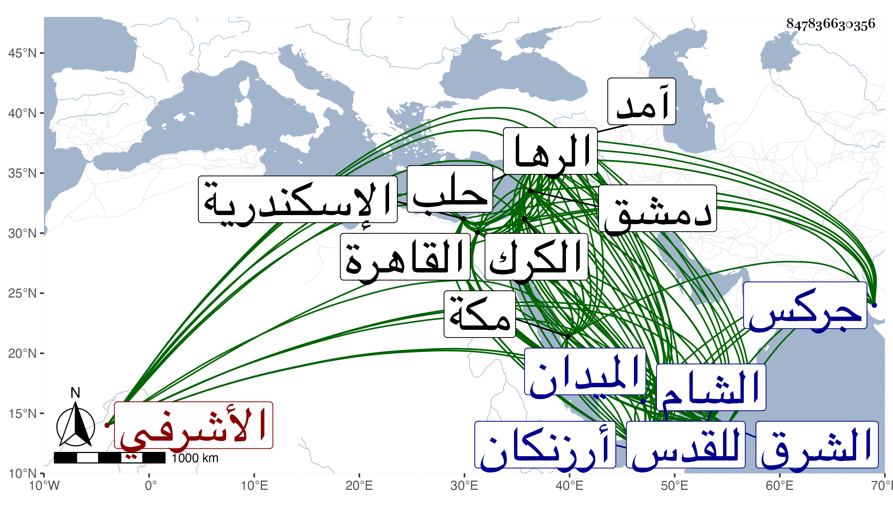

0902Sakhawi.DawLamic.ITO20230111-ara1.EIS1600.847836630356
Biography ID: 847836630356
255
جانم الأشرفي برسباي بل هو قريبه ولذا استقدمه من جركس ثم عمله خاصكيا ثم أشركه مع غيره في إمرة الطبلخاناه ثم قدمه في سنة ست وثلاثين ثم عمله أميراخور إلى أن تجرد صحبة العسكر إلى أرزنكان وكان قدومهم بعد موت قريبه فقبض عليه الأتابك وحبسه باسكندرية مدة ثم نقل منها إلى البلاد الشامية ثم أطلق في سنة إحدى وخمسين وأرسل لمكة بطالا ثم للقدس ثم حبس بقلعة الكرك إلى أن أطلقه الأشرف اينال وقدمه بالقاهرة ثم أعطاه نيابة حلب ثم الشام فلما تسلطن المؤيد خاف من غائلته لقوة شوكته وكاتب أعيان دمشق بالقبض عليه متى أمكنهم واتفق مجيء ولده الشرف يحيى القاهرة شافعا في بعض الأمراء فوعد بذلك بعد مدة وكان ذلك سببا لمشيه سرا مع الامراء حتى أذعن جمهورهم لوالده وأخذ عليهم في ذلك العهود والمواثيق واستكتب خطوطهم ورجع وعنده ان الامر قد تم لأبيه وضم أبوه ذلك لما كان يراه من المنامات وما يبشره به من يعتقد صلاحه فبادر بعد أن وقعت هجة نهب فيها جميع ماله من خيول وقماش ومتاع وغير ذلك إلى الميدان على أقبح وجه ، وتوقف في دخوله القاهرة كذلك فحسنه له بعض مفسدي أتباعه فما أمكنته المخالفة ووصل مطرودا منهوبا إلى الصالحية فبلغه استقرار الظاهر خشقدم فسقط في يده وما أمكن كل منهما إلى المخادعة لصاحبه حتى استقر به على حاله في نيابة دمشق وعاد اليها بعد وصوله لخانقاه سرياقوس على رغمه وتلافى أمره مع عوام دمشق بالاحسان والمغالطة وسلوك العدل وكذا استعمل مع السلطان ما يقتضي استجلاب خاطره فلم ينجر معه بل أرسل له بعد مديدة بالعزل وأن يتوجه للقدس بطالا فلم يجب وخرج من دمشق بمماليكه وحشمه إلى جهة الشرق ووقعت له أمور فيه إلى أن توجه لصاحب آمد حسن بك فقام معه وقدم إلى معاملة حلب فلم ينتج أمره فعاد إلى الرها إلى أن دس عليه فيها من قتله من مماليكه في ربيع الاول سنة سبع وستين ، وأرسل حسن بك بولده الشرف يحيى مع قاصد له لاستعطاف السلطان عليه فأمر بتوجهه للقدس بطالا ووبخ القاصد فاعتذر وساعده الامراء حتى رضى عنه وألبسه خلعة وجهز معه أخرى هائلة لمرسله مع هدية ، وكان جانم دينا متعبدا مقتفيا اثر السنة محبا في الفقهاء والصالحين منور الشيبة قصير القامة كثير الافضال والمؤاساة مجتهدا في أحكامه متحريا في أحواله بحيث عدت حركته وانقياده مع من لم يتدبر العاقبة محنة لما نشأ عنها من السفك والنهب مع حدة وبادرة وسرعة حركة ولكن محاسنه كثيرة وما رأيت أحدا من ثقات أصحابه كالزين قاسم والبرهان القادريين إلا ويذكر عنه أوصافا جميلة وأنه لا مال له معهم بل هو فيه كأحدهم ، وأما خطيب مكة الكمال أبو الفضل النويري فله معه اليد البيضاء خصوصا حين ورد عليه الشام فانه ما رجع إلا ملكا ، وبالجملة فقد عاش سعيدا ومات شهيدا رحمه الله وإيانا .
